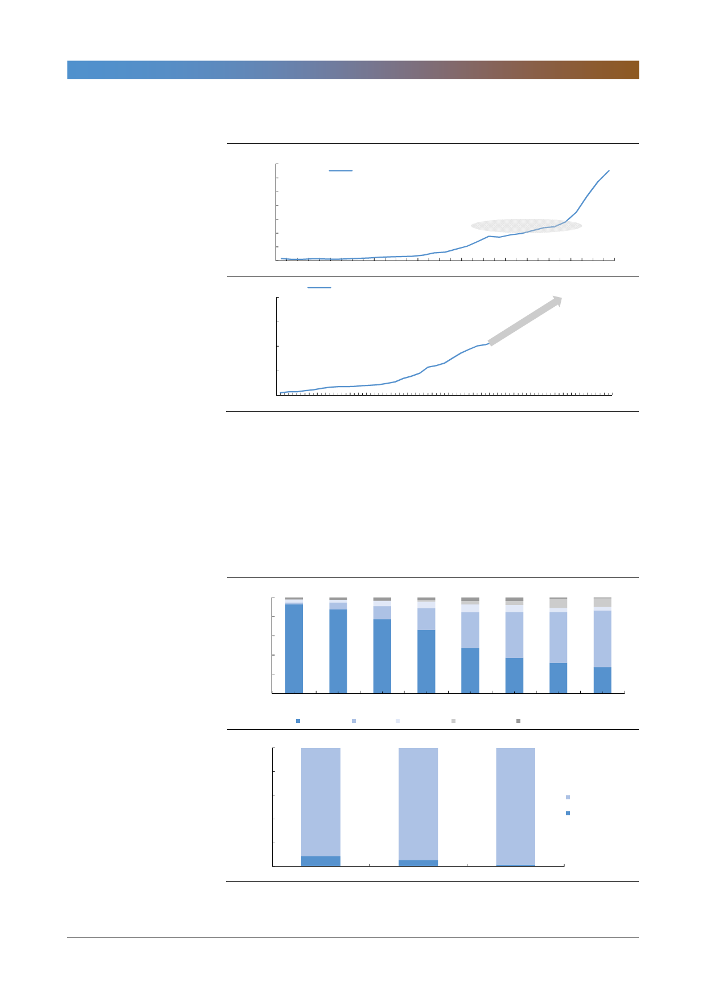

GS건설(006360)
[그림 12] 베트남과 한국의 인당 GDP
(달러)
7,000
6,000
5,000
4,000
3,000
2,000
1,000
0
1960
(달러)
4,000
3,000
한국 1인당 GDP
1기 신도시 건설 시작
1965
1970
베트남 1인당 GDP
1975
1980
1985
한국의 1980년대와 유사한
GDP 및 성장률
2,000
1,000
0
1990
1995
2000
자료: Bloomberg, World Bank, 한국투자증권
2005
2010
2015
2020
2025
1990
2030
한국의 경제성장이 가능했던 데는 1기 신도시의 역할이 컸다. 베트남도 경제 성
장으로 중산층이 확대되며 도시의 주택수요가 증가하고 있다. 베트남도 호치민과
하노이의 인구 집중을 완화하기 위해서는 핵심 도시에 인접하면서도 자족기능이
가능한 신도시가 필요하고 신도시는 베트남 경제 성장의 중추적 역할을 하게 될
것이다. 베트남 정부가 부동산 시장에 외국인 투자를 개방한 이유다.
[그림 13] 한국과 베트남의 주거 유형 비교
100%
80%
60%
40%
20%
0%
1975
1980
1985
1990
단독 주택 아파트 연립 주택
1995
2000
2005
2010
다세대 주택 영업용 건물내 주택
100%
80%
60%
40%
91.3%
20%
0%
8.7%
하노이
자료: 통계청, GSO, 한국투자증권
94.4%
5.6%
호치민
98.5%
단독주택
아파트/빌라
1.5%
전국
10